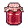
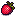
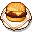

"Iridium Quality Everytime!"
 Artisan Goods
 Fresh Seasonal Fruits
 Ready-To-Cook Meal Kits
Kiss the Grocery Store Goodbye!
Stardust Market is an online store for fresh from the valley, straight from the heart farm-to-table goods.
Check out our spring favorites such as our award-winning strawberry jam!
Sign up for a Stardust Select account to access coupons and our newsletter!